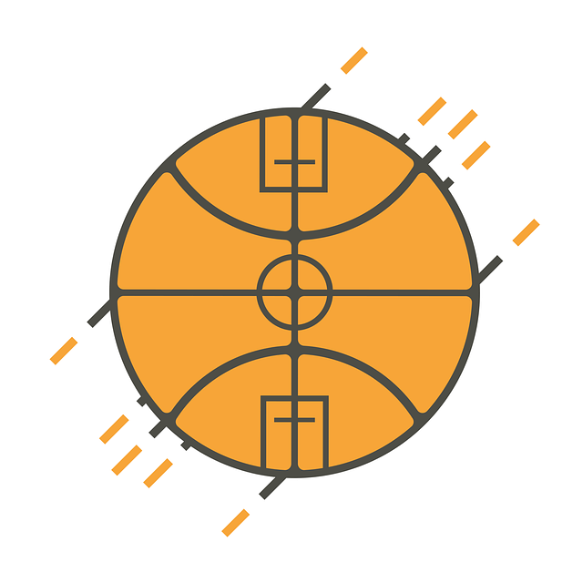
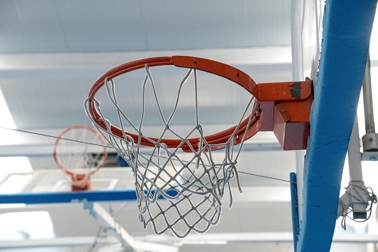

Website Project Plan
Site Name
Name: BasketTrack
I chose the name “BasketTrack” because it combines “Basket” (basketball) with “Track” (to follow or measure), representing the site’s focus on basketball drills and progress tracking.
Site Purpose
This site will serve as a centralized resource for basketball players—especially beginners and intermediates—by providing:
- Structured drills organized by skill level and focus area.
- A performance calculator to help track improvements in shooting accuracy, dribbling speed, and endurance.
- Educational content on basketball fundamentals and training tips.
Scenarios
- What drills can I use to improve my free throw shooting percentage?
- How can I measure my dribbling speed over time and see if I’m improving?
Color Scheme
- Dark Blue (#1e3a5f): Used for headings, primary buttons, and header background.
- Orange (#f97316): Used for accents, secondary buttons, active icons, and highlights.
- Light Gray (#f4f4f4): Used for the main background to support good readability.
Typography
- Bebas Neue: Used for titles and headers to create a strong, athletic visual style.
- Roboto: Used for body text and paragraph content for readability and a clean look.
Wireframes
Mobile View:

Desktop View:
